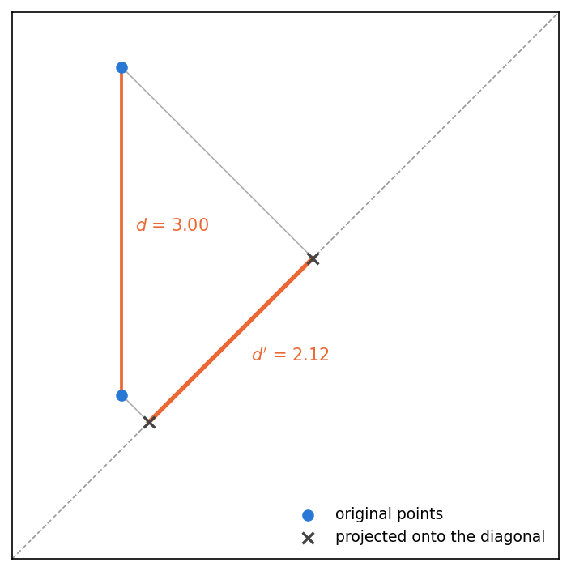
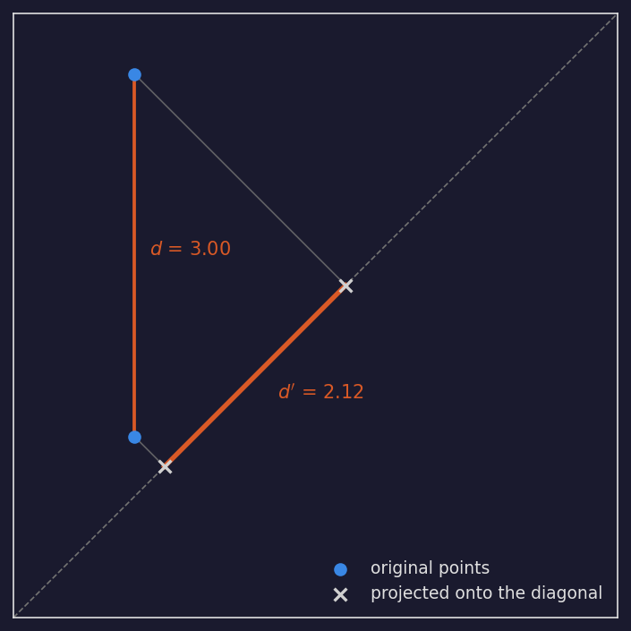
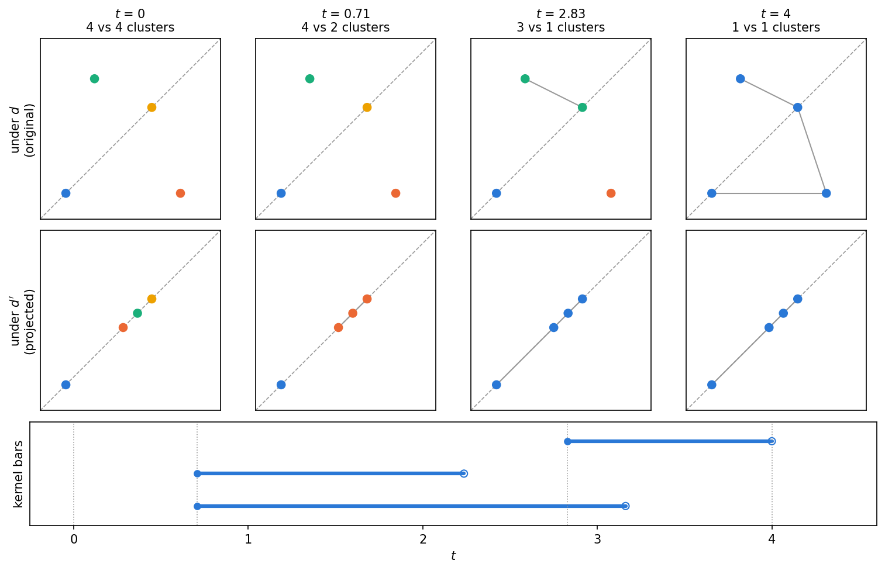
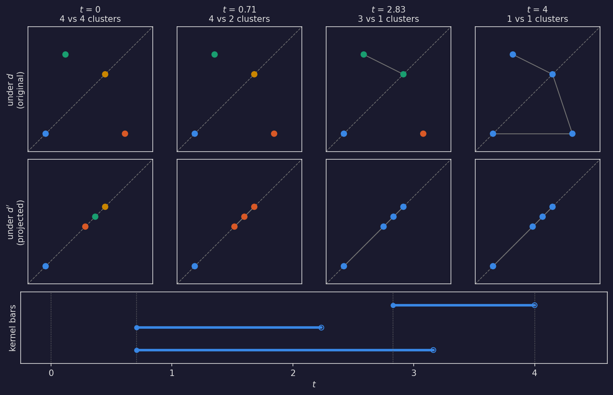
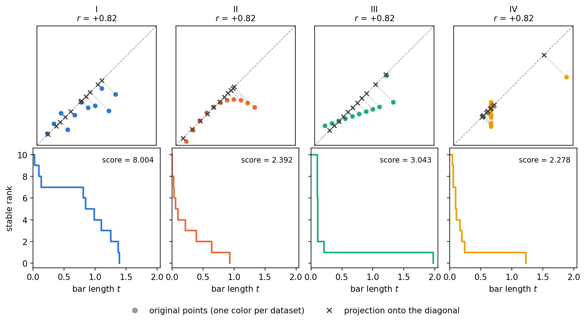
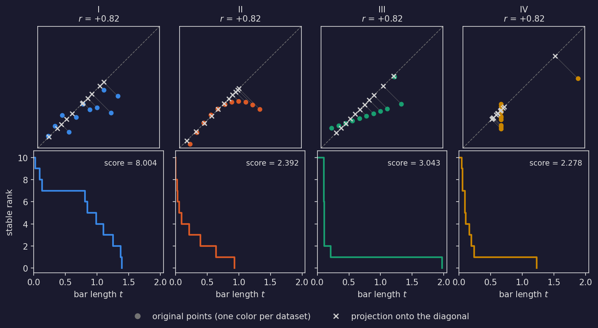
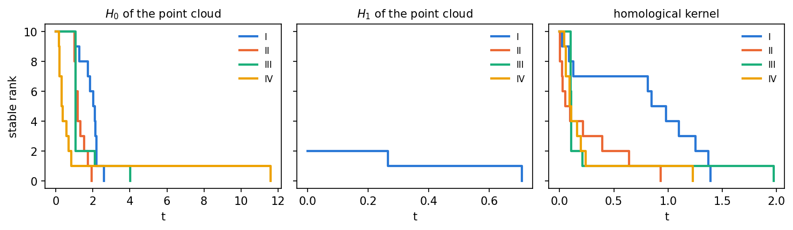
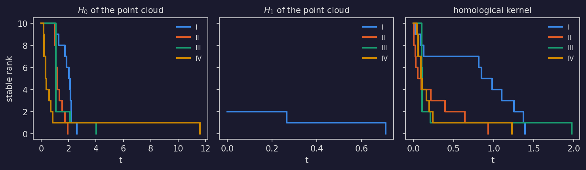

Homological Kernels#
This guide covers the homological kernel in stablebear: what it computes, how
to prepare its paired inputs, and how to read the result. The computation
returns ordinary persistence barcodes, so everything downstream from the
barcode – stable ranks, scores, distances, means – is the standard pipeline
described in Persistent Homology and is not repeated here. Homological kernels
exist in every homology degree, but at the moment only the 0-th one
(dim=0) is computed. For the more mathematically inclined reader, the
precise definitions behind the method are collected in
Mathematical background at the end of this guide.
Background#
The homological kernel compares two distances on the same set of points. The input is a point set together with two distances \(d\) and \(d'\) with \(d' \le d\) everywhere – for example, a point cloud with its Euclidean distance, and a projection of the same point cloud, which can only move points closer together. Now grow a scale parameter \(t\) from zero and consider two points connected whenever their distance is at most \(t\) (the filtration scale of Persistent Homology). As \(t\) grows, each distance merges the points into larger and larger clusters, and since \(d'\) is the smaller distance, it merges them earlier. The homological kernel records those disagreements.
The figure below shows the shrinking: both points drop onto the diagonal and end up closer together than they started. The diagonal \(y = x\) is not an arbitrary choice – this projection is what turns the homological kernel into a correlation method: a standardized point cloud of two perfectly positively correlated variables already lies on the diagonal and is not moved at all, so how much the projection shrinks the distances measures how far the data is from that ideal. How this becomes a correlation score is developed below.




Show code
def plot_projection(color="#2a78d6", highlight="#eb6834",
proj_color="#444444", grid_color="0.6"):
# Two points on the same side of the diagonal.
cloud = np.array([[2.0, 2.5], [2.0, 5.5]])
projected = diagonal_projection(cloud)
fig, ax = plt.subplots(figsize=(5.2, 4.8))
ax.axline((0, 0), slope=1, color=grid_color, linestyle="--", linewidth=0.8)
for p, q in zip(cloud, projected):
ax.plot([p[0], q[0]], [p[1], q[1]], color=grid_color,
linewidth=0.8, alpha=0.8)
# The pair before and after: the projection pulls the two points closer
# together.
pair, proj_pair = cloud, projected
d = float(np.linalg.norm(pair[0] - pair[1]))
dp = float(np.linalg.norm(proj_pair[0] - proj_pair[1]))
ax.plot(pair[:, 0], pair[:, 1], color=highlight, linewidth=1.8)
ax.plot(proj_pair[:, 0], proj_pair[:, 1], color=highlight, linewidth=2.6)
ax.annotate(f"$d$ = {d:.2f}", xy=pair.mean(axis=0),
xytext=(8, 0), textcoords="offset points",
fontsize=10, color=highlight)
ax.annotate(f"$d'$ = {dp:.2f}", xy=proj_pair.mean(axis=0),
xytext=(12, -12), textcoords="offset points",
fontsize=10, color=highlight)
ax.scatter(cloud[:, 0], cloud[:, 1], s=36, color=color, zorder=3,
label="original points")
ax.scatter(projected[:, 0], projected[:, 1], s=44, color=proj_color,
marker="x", linewidth=1.6, zorder=4,
label="projected onto the diagonal")
ax.legend(frameon=False, fontsize=9, loc="lower right")
ax.set_xlim(1.0, 6.0)
ax.set_ylim(1.0, 6.0)
ax.set_aspect("equal")
ax.set_xticks([])
ax.set_yticks([])
fig.tight_layout()
return fig
The output is a persistence barcode with one bar per merge: the bar is born at the scale where two clusters merge under \(d'\) and dies at the scale where the same clusters merge under \(d\). Where the two distances agree, the bars have length zero – the more they disagree, the longer the bars.
Watching a small point cloud at a few growing scales makes this concrete. Points within distance \(t\) of each other are joined by an edge, and the clusters are the connected components of the resulting graph; the grey edges are the ones that cause the merges. At every scale the projected points (bottom row) have merged into at least as few clusters as the originals (middle row) – the projection is always ahead. Each bar in the resulting barcode spans exactly one of those leads, from the scale where two clusters merge under \(d'\) to the scale where the same clusters merge under \(d\):




Show code
def plot_merging(colors=("#2a78d6", "#eb6834", "#1baf7a", "#eda100"),
grid_color="0.6"):
cloud = BACKGROUND_CLOUD
projected = diagonal_projection(cloud)
bars = persistence.compute_homological_kernel(cloud, projected)[0].to_numpy()
# Snapshot the actual merge scales, so each column shows the situation at
# a birth or death of a bar: the first and last merge under d', then the
# final merge under d.
scales = [0.0, bars[:, 0].min(), bars[:, 0].max(), bars[:, 1].max()]
fig = plt.figure(figsize=(10, 6.4), layout="constrained")
gs = fig.add_gridspec(3, len(scales), height_ratios=(2, 2, 1.15),
hspace=0.06)
for row, (points, label) in enumerate([(cloud, "under $d$\n(original)"),
(projected, "under $d'$\n(projected)")]):
# H0 only sees connectivity, so draw just the tree edges that cause
# the merges (the minimum spanning tree) -- the remaining edges of the
# full Rips graph add nothing and would clutter the picture.
mst = _mst_edges(points)
for col, t in enumerate(scales):
ax = fig.add_subplot(gs[row, col])
# The diagonal the points are projected onto, in both rows: in the
# original point cloud it shows where each point will land.
ax.axline((0, 0), slope=1, color=grid_color, linestyle="--",
linewidth=0.8)
comp = _components(points, t)
for w, i, j in mst:
if w <= t + 1e-9:
ax.plot(points[[i, j], 0], points[[i, j], 1],
color=grid_color, linewidth=1.0, zorder=1)
# One color per cluster, stable across panels.
point_colors = [colors[comp[i]] for i in range(len(points))]
ax.scatter(points[:, 0], points[:, 1], s=42,
c=point_colors, zorder=2)
if row == 0:
n_d = len(set(_components(cloud, t).values()))
n_dp = len(set(_components(projected, t).values()))
ax.set_title(f"$t$ = {round(t, 2):g}\n{n_d} vs {n_dp} clusters",
fontsize=10)
if col == 0:
ax.set_ylabel(label, fontsize=10)
ax.set_xlim(-0.9, 5.4)
ax.set_ylim(-0.9, 5.4)
ax.set_aspect("equal")
ax.set_xticks([])
ax.set_yticks([])
# The resulting homological kernel barcode on the same scale axis: each
# bar is born at a merge under d' and dies at the matching merge under d.
ax = fig.add_subplot(gs[2, :])
for k, (birth, death) in enumerate(sorted(bars, key=lambda b: b[0])):
ax.plot([birth, death], [k, k], color=colors[0], linewidth=3,
solid_capstyle="round")
ax.scatter([birth], [k], s=26, color=colors[0], zorder=3)
ax.scatter([death], [k], s=34, facecolors="none",
edgecolors=colors[0], zorder=3)
for t in scales:
ax.axvline(t, color=grid_color, linestyle=":", linewidth=0.8)
ax.set_xlim(-0.25, 4.6)
ax.set_ylim(-0.6, len(bars) - 0.4)
ax.set_yticks([])
ax.set_xlabel("$t$")
ax.set_ylabel("kernel bars", fontsize=10)
return fig
The main application of the homological kernel is as a correlation method: pair two variables into a 2D point cloud, project that point cloud onto the diagonal \(y = x\), and measure how much the topology of the original point cloud differs from that of its projection. The score measures deviation from a perfect positive linear relationship. A standardized point cloud with Pearson correlation \(+1\) lies exactly on the diagonal, so every bar has length zero, and for positively correlated linear data the score moves closely with Pearson’s \(r\). The two part ways exactly where Pearson stops being informative: non-linear relationships and clustering produce long bars that \(r\) does not see, and negatively correlated data – linear or not – lies far from the diagonal and scores high. The total length of all bars is therefore a measure of non-positive correlation, capturing dependence that a classical measure such as Pearson correlation misses.
The method is not limited to projections: it accepts any two distances with \(d' \le d\), on data of any dimension, either as point clouds compared under the Euclidean metric or as precomputed distance matrices. The framework, the algorithm, and its proof of correctness are developed in full in the master’s thesis [1].
Ordinary persistent homology
(compute_persistent_homology()) describes the
shape of a single dataset – its clusters and loops. The homological kernel
answers a different question: it compares two structures on the same points
and reports only where they disagree. The price is that you must construct the
second structure yourself – stablebear does not do it for you. This framework
is highly flexible in practice, but constructing that second structure often
needs careful thought in cases other than the standard diagonal projection.
Computing the homological kernel#
compute_homological_kernel() takes two inputs
of the same kind and shape. X carries the larger distance \(d\) and
Y the smaller distance \(d'\); the requirement \(d' \le d\) for
every pair of points is what makes the homological kernel well-defined, and
the computation raises a RuntimeError if it is violated. The result is a
BarcodeTensor with one homological kernel
barcode per element; a pair on \(n\) points always produces \(n - 1\)
bars, one per merge in the clustering hierarchy. The dim parameter selects
the homology degree; only dim=0 is currently supported.
Point clouds#
Point clouds always use the Euclidean metric. For the correlation use case,
X is the point cloud and Y is its projection onto the diagonal. An
orthogonal projection can only move points closer together, so
\(d' \le d\) is guaranteed for any input. Keep point clouds in their
ambient dimension – express a projection in the original coordinates rather
than dropping columns:
import numpy as np
from stablebear import persistence
# A small 2D "correlation point cloud"
X = np.array([[0.0, 0.0], [4.0, 0.0], [0.0, 4.0], [3.0, 3.0]])
# Its projection onto the diagonal: (x, y) -> ((x+y)/2, (x+y)/2)
m = X.mean(axis=1, keepdims=True)
Y = np.broadcast_to(m, X.shape).copy()
bcs = persistence.compute_homological_kernel(X, Y)
kernel = bcs[0] # one Barcode, with len(X) - 1 = 3 bars
To process many pairs at once, store them in two PointCloudTensors.
Element i of X is paired with element i of Y, and the pairs
are computed in parallel:
import stablebear as sb
clouds = sb.zeros((100,), dtype=sb.pcloud64)
projected = sb.zeros((100,), dtype=sb.pcloud64)
for i in range(100):
cloud = np.random.randn(30, 2)
clouds[i] = cloud
projected[i] = np.broadcast_to(cloud.mean(axis=1, keepdims=True),
cloud.shape).copy()
kernels = persistence.compute_homological_kernel(clouds, projected)
print(kernels.shape) # (100,)
Distance matrices#
For any metric other than the Euclidean one, provide both inputs as
precomputed distance matrices with \(d' \le d\) entrywise. For example,
take \(d\) to be the shortest-path distance in a graph and \(d'\) the
shortest-path distance in the same graph with an extra edge: adding an edge
can only shorten paths, so \(d' \le d\) holds automatically – the same
role the projection plays for point clouds. Here the graph is two two-point
clusters, {0, 1} and {2, 3}, whose points sit at distance 1 within
each cluster, joined by a single bridge edge 1 -- 2 of length 5; the
extra edge is a shortcut 0 -- 3 of length 2:
import stablebear as sb
from stablebear import persistence
# Shortest-path distances without and with the shortcut
d_paths = [(1, 0, 1.0), (2, 0, 6.0), (2, 1, 5.0),
(3, 0, 7.0), (3, 1, 6.0), (3, 2, 1.0)]
dp_paths = [(1, 0, 1.0), (2, 0, 3.0), (2, 1, 4.0),
(3, 0, 2.0), (3, 1, 3.0), (3, 2, 1.0)]
d = sb.DistanceMatrix(4, dtype=sb.float64)
dp = sb.DistanceMatrix(4, dtype=sb.float64)
for (i, j, dij), (_, _, dpij) in zip(d_paths, dp_paths):
d[i, j] = dij
dp[i, j] = dpij
bcs = persistence.compute_homological_kernel(d, dp)
The homological kernel reports exactly what the shortcut changed: the two within-cluster merges happen at scale 1 under both distances, giving two zero-length bars, while the merge of the two clusters happens at scale 2 under \(d'\) (the shortcut) but only at scale 5 under \(d\) (the bridge) – one bar \([2, 5)\).
Input flexibility#
Both X and Y accept the same forms as
compute_persistent_homology():
a
PointCloud, plain NumPy array, orFloatTensor(a single point cloud);a
DistanceMatrix(a single precomputed metric);a
PointCloudTensororDistanceMatrixTensor(a whole tensor of them, computed in parallel).
X and Y must be the same kind – two point clouds or two distance
matrices, never one of each. A single-instance input returns a
BarcodeTensor of shape (1,); a tensor input returns a barcode tensor
of the same shape.
From homological kernel barcode to correlation score#
Homological kernel barcodes are ordinary
Barcode objects, so every functional
summary and tensor operation from Persistent Homology applies to them
unchanged. The summary used for the
correlation score is the stable rank, which here counts, for each
threshold \(t\), how many disagreements between the two distances exceed
\(t\). The score is the total length of all bars, obtained as the
\(L^1\) norm of the stable rank:
sranks = persistence.barcode_to_stable_rank(kernels)
scores = sb.lp_norm(sranks, p=1)
A score of zero means every bar has length zero: the point cloud and its projection merge identically, i.e. the point cloud already lies on the diagonal. Larger scores mark stronger deviation from it. Comparing, averaging, or classifying whole cohorts of homological kernels works exactly as for any other barcode tensor – see Persistent Homology.
A worked example: Anscombe’s quartet#
Anscombe’s quartet [2] is four small datasets that share, to two decimals, the same mean, the same variance, the same Pearson correlation (\(r\) = +0.82) and the same regression line, yet look quite different. It is a standard demonstration that summary statistics can miss what a plot shows immediately.
The whole computation – project onto the diagonal, compute the homological kernel, summarize as a stable rank, integrate to a score – fits in a dozen lines:
def diagonal_projection(cloud):
"""Project every point of a 2D point cloud onto the diagonal y = x."""
midpoint = cloud.mean(axis=1, keepdims=True)
return np.broadcast_to(midpoint, cloud.shape).copy()
def kernel_stable_rank(cloud):
"""Stable rank of the homological kernel of a point cloud and its projection."""
kernels = persistence.compute_homological_kernel(cloud, diagonal_projection(cloud))
return persistence.barcode_to_stable_rank(kernels)
def kernel_score(stable_ranks):
"""The scalar score: the area under the stable rank."""
return float(np.asarray(sb.lp_norm(stable_ranks, p=1))[0])
Applied to each dataset of the quartet:




Show code
def plot_quartet(colors=("#2a78d6", "#eb6834", "#1baf7a", "#eda100"),
proj_color="#444444", grid_color="0.6"):
quartet = anscombes_quartet()
# Each dataset keeps one color across both of its panels (the same colors
# the invariants figure uses); the projections stay neutral so they never
# collide with a dataset's color.
fig, axes = plt.subplots(2, 4, figsize=(10, 5.4))
for column, color, (name, cloud) in zip(range(4), colors, quartet.items()):
cloud_ax, srank_ax = axes[0, column], axes[1, column]
# Top row: the point cloud, the diagonal, and where each point projects to.
projected = diagonal_projection(cloud)
r = np.corrcoef(cloud[:, 0], cloud[:, 1])[0, 1]
cloud_ax.axline((0, 0), slope=1, color=grid_color, linestyle="--",
linewidth=0.8)
for p, q in zip(cloud, projected):
cloud_ax.plot([p[0], q[0]], [p[1], q[1]], color=grid_color,
linewidth=0.6, alpha=0.6)
cloud_ax.scatter(cloud[:, 0], cloud[:, 1], s=22, color=color, zorder=2)
cloud_ax.scatter(projected[:, 0], projected[:, 1], s=28, color=proj_color,
marker="x", linewidth=1.4, zorder=3)
cloud_ax.set_title(f"{name}\n$r$ = {r:+.2f}", fontsize=10)
# A common square window, so the diagonal runs corner to corner and the
# four columns are directly comparable.
cloud_ax.set_xlim(2.5, 20)
cloud_ax.set_ylim(2.5, 20)
cloud_ax.set_aspect("equal")
cloud_ax.set_xticks([])
cloud_ax.set_yticks([])
# Bottom row: the kernel's stable rank, with its integral annotated.
sranks = kernel_stable_rank(cloud)
plotpcf(sranks[0], ax=srank_ax, color=color, linewidth=2)
# The score annotates the curve it is the area of, rather than sitting
# in a title next to Pearson's r as if it were a rival scalar.
srank_ax.text(0.95, 0.93, f"score = {kernel_score(sranks):.3f}",
transform=srank_ax.transAxes, ha="right", va="top",
fontsize=9)
# Shared limits: the curves are only comparable on common axes.
srank_ax.set_xlim(0, 2.05)
srank_ax.set_ylim(-0.4, 10.6)
srank_ax.set_xlabel("bar length $t$")
if column == 0:
srank_ax.set_ylabel("stable rank")
else:
srank_ax.set_yticklabels([])
legend_handles = [
Line2D([], [], linestyle="none", marker="o", color=grid_color,
label="original points (one color per dataset)"),
Line2D([], [], linestyle="none", marker="x", color=proj_color,
markeredgewidth=1.4, label="projection onto the diagonal"),
]
fig.legend(handles=legend_handles, loc="lower center", ncol=2, frameon=False)
fig.tight_layout(rect=(0, 0.05, 1, 1))
return fig
The top row shows each point cloud, the diagonal it is projected onto, and a grey segment joining every point to where it lands. Underneath each point cloud is the stable rank of its homological kernel, with the score – the area under the curve – annotated. Pearson’s \(r\) is identical across all four; the four curves are not remotely alike.
Reading the curves#
The height at \(t = 0\) is the number of disagreements. All four datasets sit at 10 – with 11 points there are always 10 merges, and in each dataset every one of them disagrees at least slightly. What separates the datasets is not the count but how large the disagreements are, which is the rest of the curve.
A curve that drops to zero immediately means the point cloud lies on the diagonal. Ten bars of length zero give a stable rank that is 0 everywhere, area included.
Three things to keep in mind when comparing scores or curves:
The diagonal is \(y = x\), not the regression line. Strongly anti-correlated data is far from it and therefore scores high. The homological kernel measures alignment with the diagonal, not the strength of a relationship in either direction.
Scores grow with the number of points. A point cloud of \(n\) points always produces \(n - 1\) bars, so for the same shape a larger point cloud scores higher – just as \(H_0\) and \(H_1\) stable ranks grow with the size of the point cloud.
Centering does not change the result, rescaling does. The homological kernel depends only on distances, so translating a point cloud changes nothing. Dividing each variable by its standard deviation, on the other hand, is a real modelling choice that changes both the scores and their order. Decide once, then apply it to everything you intend to compare.
The score is a summary of the curve, not the other way around. Datasets II and IV score 2.392 and 2.278 – within 5% of each other despite looking quite different – because collapsing a curve into a scalar can flatten two different geometries into the same total. Their bar lengths, sorted longest first, show what the two numbers hide:
dataset |
bar lengths |
score |
|---|---|---|
II |
0.933, 0.642, 0.393, 0.215, then six under 0.1 |
2.392 |
IV |
1.227, then nine under 0.25 |
2.278 |
Dataset II spreads its disagreements over a range of sizes; dataset IV has one large disagreement and nine negligible ones. The scores barely distinguish them, but the curves plainly do – and the curve is what the homological kernel produced, so comparing curves costs nothing extra.
Comparison with ordinary persistent homology#
How does this compare with the plain persistent homology of each point cloud? Computing \(H_0\) and \(H_1\) of each dataset, next to the homological kernel, gives three quite different pictures:




Show code
def plot_invariants(colors=("#2a78d6", "#eb6834", "#1baf7a", "#eda100")):
quartet = anscombes_quartet()
fig, axes = plt.subplots(1, 3, figsize=(10, 3), sharey=True)
for color, (name, cloud) in zip(colors, quartet.items()):
# reduced=True drops the essential H0 bar, which never dies and would
# give every dataset an infinite stable rank integral.
bcs = persistence.compute_persistent_homology(cloud, max_dim=1, reduced=True)
kernel = persistence.compute_homological_kernel(cloud,
diagonal_projection(cloud))
for ax, bc in zip(axes, [bcs[0], bcs[1], kernel[0]]):
srank = persistence.barcode_to_stable_rank(bc)
plotpcf(srank, ax=ax, color=color, linewidth=2, label=name)
for ax, title in zip(axes, ["$H_0$ of the point cloud", "$H_1$ of the point cloud",
"homological kernel"]):
ax.set_title(title, fontsize=10)
ax.set_xlabel("t")
# Every panel carries its own legend: the H1 panel draws only dataset I
# (the others have empty barcodes), so it cannot be read off a shared one.
ax.legend(frameon=False, fontsize=8, loc="upper right")
axes[0].set_ylabel("stable rank")
fig.tight_layout()
return fig
For the quartet, \(H_0\) separates the four datasets as well – but it measures something else: how the points cluster in the plane. Its long tail for dataset IV is that dataset’s distant outlier, which would look the same whatever the relationship between the two variables. \(H_1\) is nearly silent – only dataset I has any loops at all. The other three appear in the middle panel’s legend but have no visible curve, because their \(H_1\) barcodes are empty and their stable ranks are flat at zero. Eleven points rarely enclose a hole.
There is also a reason of principle that a plain barcode – however it is summarized – cannot measure correlation. \(H_0\) and \(H_1\) depend only on the distances between points, and rotating a point cloud changes no distance while changing its correlation completely. Rotating dataset I by 90° about its center:
import numpy as np
angle = np.deg2rad(90)
R = np.array([[np.cos(angle), -np.sin(angle)],
[np.sin(angle), np.cos(angle)]])
rotated = np.ascontiguousarray((cloud - cloud.mean(0)) @ R.T + cloud.mean(0))
flips Pearson’s \(r\) from \(+0.82\) to \(-0.82\):
rotation |
Pearson \(r\) |
\(H_0\) |
\(H_1\) |
homological kernel score |
|---|---|---|---|---|
0° |
+0.82 |
19.105 |
0.973 |
8.004 |
90° |
-0.82 |
19.105 |
0.973 |
14.396 |
The two homology columns cannot tell the rotated point cloud from the original – and no quantity computed from the point cloud’s distances alone can, whatever summary is applied to it. The homological kernel score does move, because the diagonal stays fixed while the data turns relative to it. That fixed second structure is what a single barcode lacks, and supplying it is what the homological kernel provides.
Mathematical background#
This section makes precise what the bars mean, and why the object they come from is called a kernel. It is not needed in order to use the method. In plain terms: as the scale grows, both distances merge the same points into clusters, but the finer distance \(d'\) merges them earlier. Each bar records one disagreement – it is born when two clusters merge under \(d'\) and dies when the same clusters finally merge under \(d\).
Formally, the identity map \((X, d) \to (X, d')\) is 1-Lipschitz because \(d' \le d\). It therefore induces a map between the Vietoris-Rips filtrations and, after applying the 0-th homology functor, a map of persistence modules
At every scale \(t\), the finer distance \(d'\) has already connected at least as many points as \(d\), so \(\mu_t\) is surjective: it sends each \(d\)-component to the \(d'\)-component that contains it. It is generally not injective – two points can be joined under \(d'\) while still separate under \(d\). The 0-th homological kernel is the kernel of this map,
a persistence module that decomposes into a barcode \(\bigoplus_i [w_i, v_i)\). Each bar tracks one component that is identified early under \(d'\) but stays separate longer under \(d\):
the birth \(w_i\) is the scale at which two components merge under the finer distance \(d'\) – the moment the discrepancy appears,
the death \(v_i\) is the scale at which those same components merge under the coarse distance \(d\) – the moment the discrepancy is resolved.
Since \(d' \le d\), every death is at least its birth, so all bars are well-formed. A zero-length bar \([w_i, w_i)\) means the two distances merge those components at the very same scale. Long bars mark where the two structures diverge. A set of \(n\) points always produces \(n - 1\) bars, one per merge in the hierarchy.
Under the hood, the homological kernel is computed from two minimum spanning trees and a union-find sweep – \(O(n^2)\) time and \(O(n)\) memory per instance, with no distance matrix ever materialized for point clouds. The algorithm and its proof of correctness are derived in full in the thesis [1].